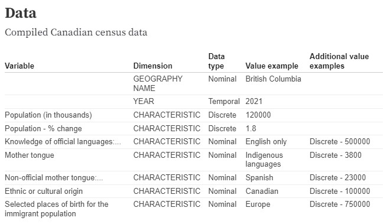

Spring Semester 2023
Group final project
An tool for investigating language distribution across Canada's multicultural society and how immigration patterns affect a region's characteristics.
Project planning and writing, data cleaning, visualisation code
Javascript, Python
Our requirements for this project were to create a series of linked visualisations to enable someone to explore and answer an analytical problem. Our project would thus enable a person to explore, gain insight, and find patterns through using the visualisation tools.
My partner and I chose to explore language diversity in Canada and how it is impacted by immigration. To do this, we used data from the 2011-2021 Canadian Census. As the Census contains a lot of data, part of the process required us to think of what data was necessary for our potential users to have.
First and foremost, I focused on language (categories, mother tongue, official and non-official), population (change), place of birth, and ethnicity. I was initially looking into using data from the muncipal level, but eventually switched to the provincial level to gain a more holistic overview of the country. To make this data easier to handle, I used Python to clean and aggregate the relevant variables into a single CSV file, and Javascript to sort them into arrays.
I chose a map as the first visualisation because it gives a brief but easily understandable overview of the data across Canada. The JSON data used in this map was retrieved from OpenStreetMap.
I also utilised line graphs to see how the population has been changing over time. Users can click on the different provinces to see a breakdown of the language in the chosen province, and also compare multiple provinces.
Finally, to understand language and ethnicity, I added some bar charts to compare the number people who speak a certain language and the number of people who are from different ethnic backgrounds.
There was a lot to consider working on this project, both what types of data are relevant, and what types of visualisations would best suit our potential users and their goals. It was interesting getting feedback from our teaching staff and seeing the different ways people would use the tools and whether it would work in a real use case. Some of the ways I thought the visualisations would work end up being more descriptive in a different form, so it was cool seeing the difference between what I wanted to do vs what was needed or best suited for the tasks.